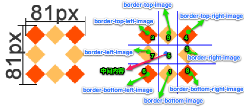
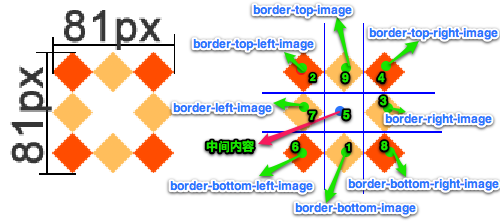
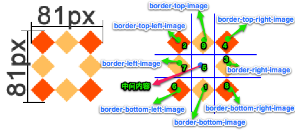

这张图片将会被“切割”成九宫格形式，然后进行平铺。四个角位置、形状保持不变，中心位置和水平垂直向两个方向平铺：
 

1.文本
2.盒模型中的 box-sizing 属性
3.处理兼容性问题：私有前缀
4.边框
5.背景属性
6.渐变
text-shadow：设置文本的阴影
格式举例： text-shadow: 20px 27px 22px pink; 参数解释：水平位移 垂直位移 模糊程度 阴影颜色。
测试阴影效果
举例：凹凸文字效果
text-shadow 可以设置多个阴影，每个阴影之间使用逗号隔开。例如。
测试阴影效果
测试阴影效果
实现凹凸文字效果的方式比较简单，给左上角放黑色的阴影，右下角放白色的阴影，就达到了凹下去的效果。
CSS3 对盒模型做出了新的定义，即允许开发人员指定盒子宽度和高度的计算方式。
这就需要用到 box-sizing属性。它的属性值可以是：content-box、border-box。解释如下。
外加模式：（css的默认方式）
box-sizing: content-box;
解释：此时设置的 width 和 height 是内容区域的宽高。盒子的实际宽度 = 设置的 width + padding + border。此时改变 padding 和 border 的大小，也不会改变内容的宽高，而是盒子的总宽高发生变化。
内减模式：【需要注意】
box-sizing: border-box;
解释：此时设置的 width 和 height 是盒子的总宽高。盒子的实际宽度 = 设置的 width。此时改变 padding 和 border 的大小，会改变内容的宽高，盒子的总宽高不变。
通过网址http://caniuse.com/ 可以查询CSS3各特性的支持程度。
处理兼容性问题的常见方法：为属性添加私有前缀。
如此方法不能解决，应尽量避免使用，无需刻意去处理CSS3的兼容性问题。
私有前缀的举例：
比如说，我想给指定的div设置下面这样一个属性：background: linear-gradient(left, green, yellow);
上面这个属性的作用是：添加从左到右的线性渐变，颜色从绿色变为黄色。
如果直接这样写属性，是看不到效果的
-webkit-: 谷歌 苹果
-moz-:火狐
-ms-：IE
-o-：欧朋
边框的属性很多，其中边框圆角和边框阴影这两个属性，应用十分广泛，兼容性也相对较好，且符合渐进增强的原则，需要重点熟悉。
border-radius 属性边框的每个圆角，本质上是一个圆，圆有水平半径和垂直半径：如果二者相等，就是圆；如果二者不等， 就是椭圆。
单个属性的写法：
border-top-left-radius: 60px 120px; //参数解释：水平半径 垂直半径
border-top-right-radius: 60px 120px;
border-bottom-left-radius: 60px 120px;
border-bottom-right-radius: 60px 120px;
复合写法：
border-radius: 60px/120px; //参数：水平半径/垂直半径
border-radius: 20px 60px 100px 140px; //从左上开始，顺时针赋值。如果当前角没有值，取对角的值
border-radius: 20px 60px;
最简洁的写法：（四个角的半径都相同时）
border-radius: 60px;
demo
1. border-radius: 50px;
2. border-radius: 50%;
3. border-radius: 100px 0 0 0;
4. border-radius: 100px/50px;
5. border-radius: 10%;
6. border-radius: 0 100px;
格式举例：
box-shadow: 水平偏移 垂直偏移 模糊程度 阴影大小 阴影颜色
box-shadow: 15px 21px 48px -2px #666;
参数解释：
1. 水平偏移：正值向右 负值向左。
2. 垂直偏移：正值向下 负值向上。
3. 模糊程度：不能为负值。
demo
注意：设置边框阴影不会改变盒子的大小，即不会影响其兄弟元素的布局。
我们还可以设置多重边框阴影，实现更好的效果，增强立体感。
边框图片有以下属性：
/* 边框图片的路径*/
border-image-source: url("images/border.png");
/* 图片边框的裁剪*/
border-image-slice: 27;
/*图片边框的宽度*/
border-image-width: 27px;
/*边框图片的平铺*/
/* repeat :正常平铺 但是可能会显示不完整*/
/*round: 平铺 但是保证 图片完整*/
/*stretch: 拉伸显示*/
border-image-repeat: stretch;
我们也可以写成一个综合属性：
border-image: url("images/border.png") 27/20px round;
demo
这张图片将会被“切割”成九宫格形式，然后进行平铺。四个角位置、形状保持不变，中心位置和水平垂直向两个方向平铺：

-webkit-border-image: url(../resources/border.png) 27/20px round;
因为../resources/border.png每一个方块的大小为27px，因此切割时候使用27px。